openEO Processes
An openEO process is an operation that takes one or more inputs, performs a task, and returns a result. In simple terms, processes are the building blocks of an openEO workflow.
Some processes load data, some filter it, some transform it, or some export it. By combining them, users can describe an Earth Observation (EO) workflow in openEO.
As described in the Glossary, a process is an operation that performs a specific task on a set of parameters and returns a result.
Examples include:
- loading a satellite collection,
- filtering data to a time range or geographic area,
- computing indices such as NDVI,
- aggregating data over time or space, and
- exporting the final result as a file.
In openEO, processes are combined into a process graph. A process graph is the machine-readable description of a workflow: it tells the backend what to do, in which order, and with which parameters.

What openEO offers
openEO offers a broad catalogue of standardised and a few non-standardised processes that cover most EO analysis tasks. These processes can be further identified as processes for data discovery, for applying operations on the cubes, or for simply exporting the results. Such as:
- Import processes to load collections, STAC resources, uploaded files, or URLs.
- Filter processes applied to a datacube to limit data by time, space, bands, labels, or metadata.
- Reducer and aggregate processes to compute summaries such as mean, median, sum, or zonal statistics of a datacube
- Math and logic processes for calculations, conditions, and comparisons.
- Reproject and resample processes to align data spatially or temporally.
- Masking processes to exclude invalid or unwanted data.
- Vector processes for geometry-based operations.
- UDF-related processes for more advanced custom logic.
- Export processes to save or publish results.
The official process definitions are maintained centrally by the openEO project in the Open-EO openeo-processes repository. For everyday use, the easiest entry point is the rendered reference at processes.openeo.org, which tracks the latest released specification.
The openEO process reference lists the processes defined by the openEO project. A specific backend may support all, some, or only a subset of them, and may also provide additional backend-specific processes.
Embedded process reference
The standardised openEO processes are embedded below:
If the embedded reference does not load in your browser, open it directly at https://processes.openeo.org/.
Process families at a glance
The full reference is extensive, so it helps to know the main families of processes offered by the openEO API.
| Process family | What it is for | Typical examples |
|---|---|---|
| Import | Bring data into a workflow | load_collection, load_stac, load_geojson, load_url |
| Filter | Restrict data before heavy processing | filter_temporal, filter_bbox, filter_spatial, filter_bands |
| Cubes | Transform or restructure data cubes | apply, apply_dimension, merge_cubes, rename_labels |
| Aggregate and reduce | Summarize data over time, space, or dimensions | aggregate_temporal, aggregate_spatial, reduce_dimension, reduce_spatial |
| Math and logic | Perform calculations and conditions | add, divide, normalized_difference, if, eq |
| Reproject and resample | Align data in space or time | resample_spatial, resample_cube_spatial, resample_cube_temporal |
| Masks | Exclude invalid or unwanted values | mask, mask_polygon |
| Vector | Work with geometries and vector data | vector_buffer, vector_reproject, filter_vector |
| UDF and external processing | Inject custom logic or external compute | run_udf, run_udf_externally, run_ogcapi |
| Export and STAC | Save, publish, or package results | save_result, export_workspace, stac_modify |
| Domain-specific EO processes | Use EO-focused higher-level operations | ndvi, sar_backscatter, cloud_detection, climatological_normal |

A simple way to think about processes
As mentioned earlier, openEO processes are the building blocks of workflows. You can think of an openEO workflow as a chain of processes that implement the questions you ask the system:
- Which process do I need to load the data?
- How do I filter the data to the relevant spatial and temporal extent?
- Which calculations do I want to perform?
- How do I want to summarise or export the result?
Each of those steps is implemented with one or more processes.
For example, a basic workflow might look like this:
load_collection
-> filter_temporal
-> filter_bbox
-> ndvi
-> aggregate_temporal_period
-> save_resultThis means:
- load a collection,
- keep only the dates you need,
- keep only the area you need,
- compute a vegetation index,
- summarize it over time, and
- export the result.
Standardized, but not identical everywhere
One of the strengths of openEO is that the same workflow idea can be used across multiple services. However, process support can differ across backends; therefore, it is recommended always to check the capabilities of the specific backend you are using.
Differences may include:
- which standardised processes are implemented,
- whether synchronous processing is supported,
- which experimental or advanced processes are available,
- whether UDFs or UDPs are supported,
- which input and output formats are available, and
- whether a backend exposes additional provider-specific processes.
The differences between backends are intentional and expected. Though openEO tries to standardise the processing language, each backend may implement it differently.
If you want more details about how services differ across backends, see the Backends page.
Process profiles and support levels
Not every service is expected to implement the same full set of processes. To make support levels easier to understand, openEO defines process profiles.
These profiles group capabilities into levels such as:
- L1 Minimal for basic openEO compliance,
- L2 Recommended for practical day-to-day usage,
- L3 Advanced for more demanding workflows, and
- L4 Above and Beyond for specialised and highly advanced use cases.
For users, the main benefit of profiles is that they help explain why two backends can both be openEO-compatible yet support different sets of processes.
The main profile levels can be summarised like this:
| Profile level | What it usually means for users |
|---|---|
| L1 Minimal | Basic openEO compliance and the minimum process set needed for simple workflows. |
| L2 Recommended | A more practical set of processes for everyday EO work, including common filtering, aggregation, and data-cube operations. |
| L3 Advanced | More advanced process support for richer workflows, including broader callback handling, STAC-related functionality, and advanced cube operations. |
| L4 Above and Beyond | Specialised and high-end capabilities for demanding or niche workflows. |
There are also sub-profiles for particular needs such as raster processing, vector processing, date and time operations, text handling, machine learning, UDFs, climatology, and analysis-ready data.
Some platforms also defined extra requirements on top of the general openEO profiles. A useful example is the former openEO Platform federation guidance, which introduced additional expectation levels often referred to as L2P, L3P, and L4P.
Those platform-specific levels can be summarised as follows:
| Additional platform level | Practical meaning |
|---|---|
| L2P | A backend not only supports the recommended process set, but is also expected to handle core raster workflows reliably at a meaningful scale. This typically includes common processes such as load_collection, filter_temporal, filter_bbox, filter_bands, apply, aggregate_temporal, aggregate_spatial, mask, ndvi, reduce_dimension, resample_spatial, and save_result. |
| L3P | The backend also supports more advanced capabilities important for advanced workflows, such as apply_neighborhood, load_stac, filter_labels, reduce_spatial, resample_cube_temporal, and run_udf. |
| L4P | The backend additionally supports more specialised or high-end functionality such as atmospheric_correction, load_uploaded_files, load_url, and sar_backscatter. |
In practice, these extra platform-specific levels were useful because they signalled more than simple endpoint availability: they indicated that important processes were expected to work robustly on larger, realistic Earth Observation workloads.
How to discover process support in practice
When you connect to a backend, you should not assume that every documented process is available exactly as shown in the generic reference.
Instead, check support using one or more of these approaches:
- Inspect the backend documentation.
- Use the backend metadata or capability endpoints.
- Use client-library helpers such as
list_processesordescribe_process.
Backends can implement a varying set of processes, including non-standardised ones.
Where to learn how to use processes
For practical usage, the next place to look is the documentation that shows how they are used on data cubes.
The most relevant section is:
That section explains how processes are used for common workflow steps such as:
- preprocessing,
- spatial operations,
- temporal operations,
- spectral operations,
- cube manipulation,
- UDFs,
- machine learning, and
- job execution.
What to do next
Depending on what you want to achieve, a sensible next step is one of the following:
- Read the Backends page to understand where process support can differ.
- Go to openEO Cube Operations to learn how processes are applied in actual EO workflows.
- Open the openEO Processes Reference when you need exact process definitions and examples.